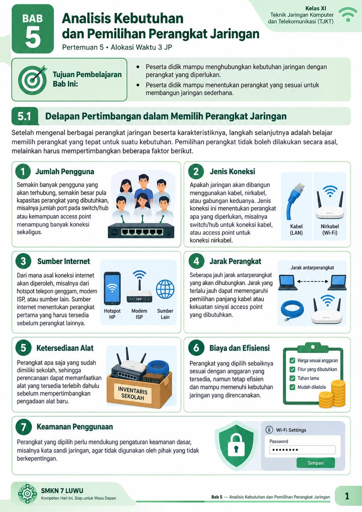
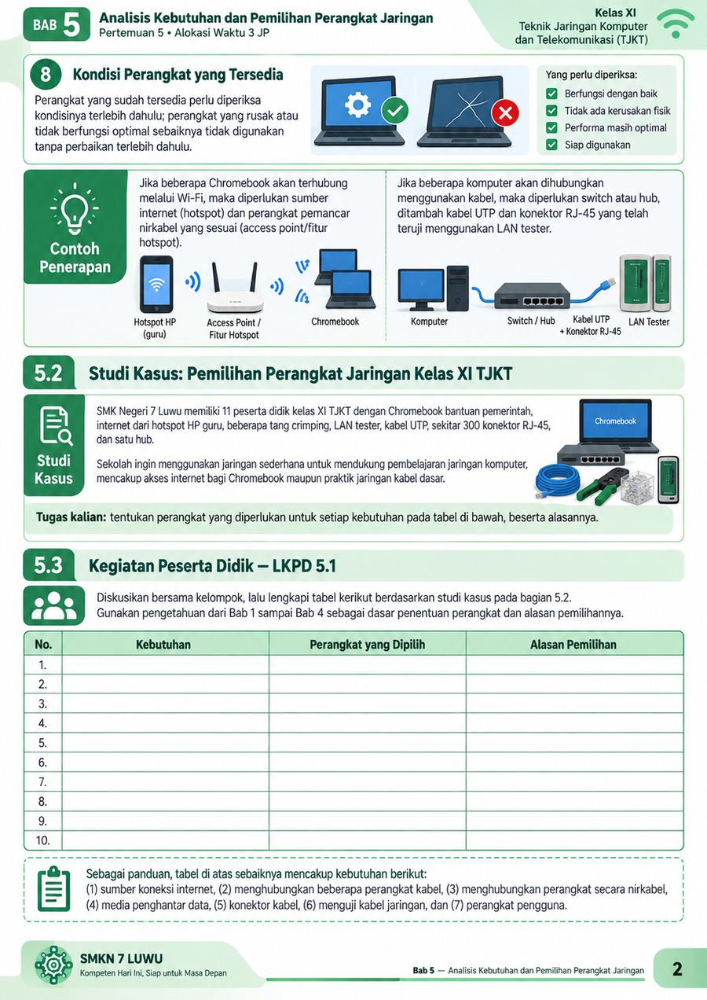
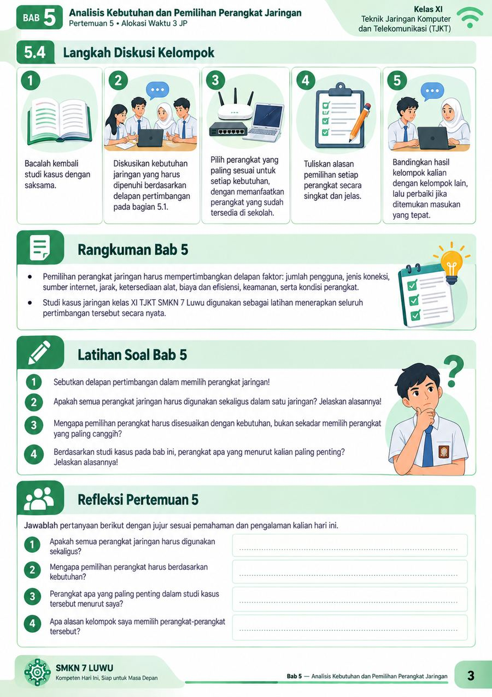

Analisis Kebutuhan dan Pemilihan Perangkat Jaringan
Bab 5 · Pertemuan 5 · Alokasi Waktu 3 JP
Halaman 1

Halaman 2

Halaman 3

Materi disajikan dalam tiga halaman gambar agar lebih nyaman dibaca
melalui Chromebook maupun HP.